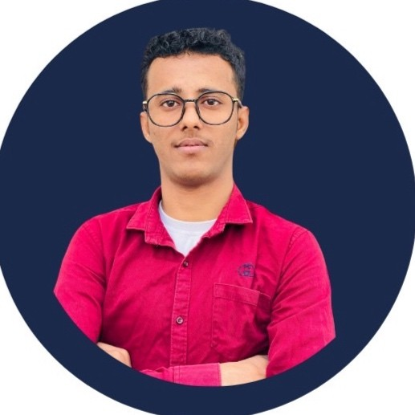

Abdulrahman Alamodi

Data Scientist & AI Specialist
Who am I:
I am a web developer student starting my juornye with web development. I
am also an experienced AI, Machine
learning and software engineer with 2 years of experience in the field. I
have worked on various projects and have
gained extensive knowledge in
HTML,CSS,JavaScript,React.js,Node.js,Express.js,MongoDB, MySQL,
Git/GitHub,
and all machime learning and deeplearning algorithms and frameworks such
as TensorFlow, PyTorch, Keras, Scikit-
Learn, Pandas, NumPy,
Matplotlib, Seaborn, and more. My expertise lies in developing scalable
and efficient machine
learning models for real-world applications.
Education:
-
Bachelor of Computer Science (Data Science)Albukhary International
University - AIU, Malaysia. Expected Graduation: [oct, 2026]
-
High school with grade 93.50 from Alamarf modern school, Yemen.
Graduated: [August, 2019]
Working experience:
- Software Engineer at Almarai Group
-
Developed and maintained software solutions using Java, Spring Boot, and
Hibernate to improve efficiency and scalability.
-
Collaborated with cross-functional teams to design and implement new
features based on business requirements.
-
Conducted code reviews and provided technical guidance to junior
developers.
-
Participated in Agile development processes, including daily stand-ups,
sprint planning, and retrospectives.
Volunteering:
-
Students Union Malaysia - Academic & Media Representative
- Date: 10/2023 - 10 /2024.
-
Represented and supported Yemeni students academically and socially
across Malaysian universities.
-
Managed digital media content and communications on behalf of the
Union.
-
Cybersecurity Awareness & Advisory Center Yemen - Member
- Date: 8/2018 - 10/2021
-
Actively participated in awareness campaigns and cybersecurity events
to help people gain knowledge and how they can protect themselves
online.
- Industrial projects Volunteering:
-
Helping some clubs and or organizations by doing some volunteering
projects to them like helping them to make their websites or making
apps for them or anything related to technology.
Skills:
- Technincal Skills:
-
Programming Languages: Python, C , Java, JavaScript, HTML, CSS, C#,
SQL
-
Frameworks/Libraries: Django, Flask, React.js, Node.js, Express.js,
TensorFlow, PyTorch, Keras, Scikit-Learn, Pandas, NumPy, Matplotlib,
Seaborn, Power BI
- Data Analysis & Engineering
- ML & DL
-
Prompt Engineering: Advanced prompt design for AI tools (e.g.,ChatGPT,
LLaMA)
- Web Tools: Git, GitHub, VS Code, Google Colab, Jupyter Notebook
- Researcher & Report Writing
- Soft Skills:
- Team Leadership & Collaboration
- Problem Solving & Critical Thinking
- Self-Learning & Adaptability
- Pasionate about learning Languages
-
Discouvering and Exploring new things and new technologies always to
solve somethings easly and in a creative way
Others: